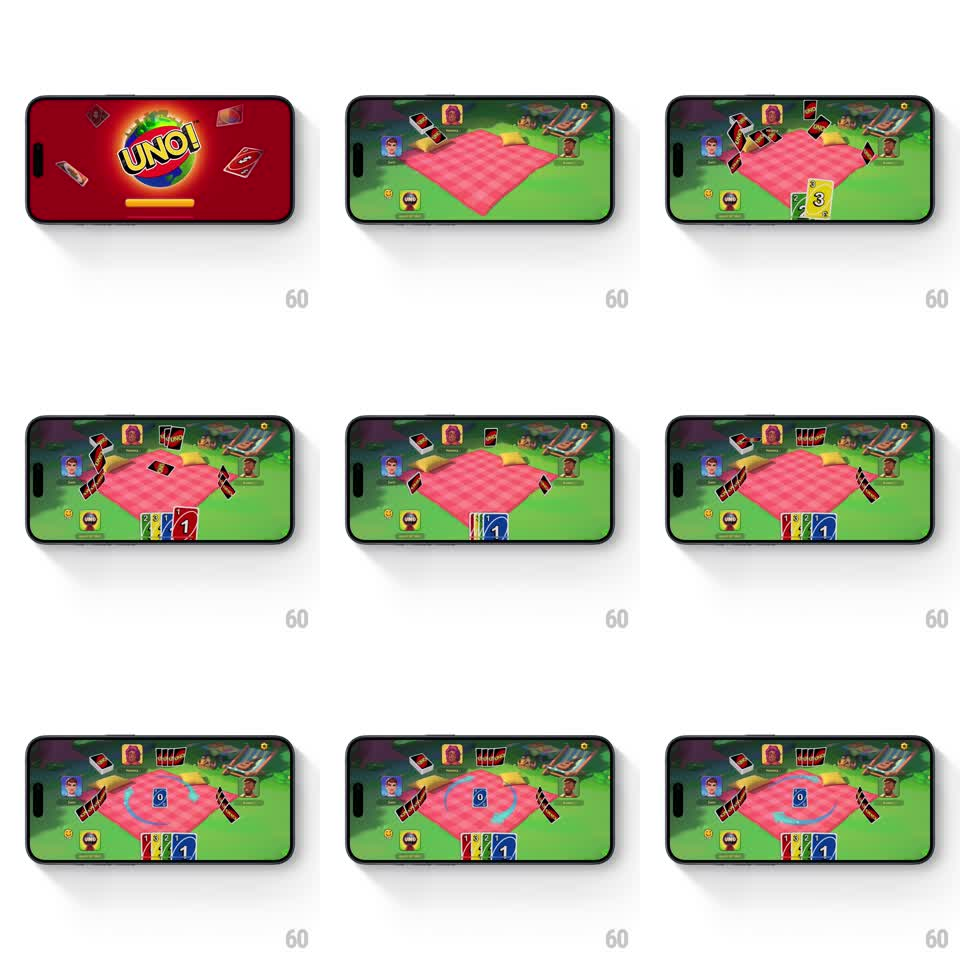

Media
Frame-by-frame

Rebuild this animation 1:1: UNO's round start - cards fly from the deck across the picnic-blanket table, dealing to each player in rapid arcs before the first card flips onto the pile.

Rebuild this animation 1:1: UNO's round start - cards fly from the deck across the picnic-blanket table, dealing to each player in rapid arcs before the first card flips onto the pile. ## Integration Integration: stack-agnostic spec - springs given as stiffness/damping, timed motions as duration + curve; map every value to your framework and animation library of choice. ## Scene Landscape UNO table: a pink gingham blanket on grass, four player avatars around the edges, the UNO logo splash first, then the deck at center dealing face-down cards to every player, the player's own hand fanning face-up at the bottom, and the first discard (blue 0) landing center with a swirling target ring. ## Motion spec Pattern: rapid multi-target deal, ~2s. - The logo splash scales in and sweeps (600ms) before cutting to the table. - Cards deal from the center deck in quick arcs: each card flies to its player along a curve (250ms per card, ease-in to ease-out), tumbling in flight, with a 60ms cadence between cards, cycling player to player. - Opponents' cards stack face-down at their spots; the player's own cards flip face-up as they land at the bottom and fan out (each fan rotation 150ms, ease-out). - The final discard card flips onto the center pile (300ms: half-flip at arc peak) and a swirl ring spins up around it (400ms, rotating gradient arc, looping). - The blanket and avatars idle subtly (2s breathing) through the whole deal. ## Calibration - The deal cadence is fast and metronomic - uneven gaps read as lag, not style. - Cards tumble as they fly; a flat slide reads as UI, not cards. ## Reduced motion Cards fade into their positions; discard fades in. ## Don't miss - The player's hand fans from the deal order - first card leftmost - with each card slightly overlapping the last. - The center swirl keeps spinning after the deal ends, marking the live pile.